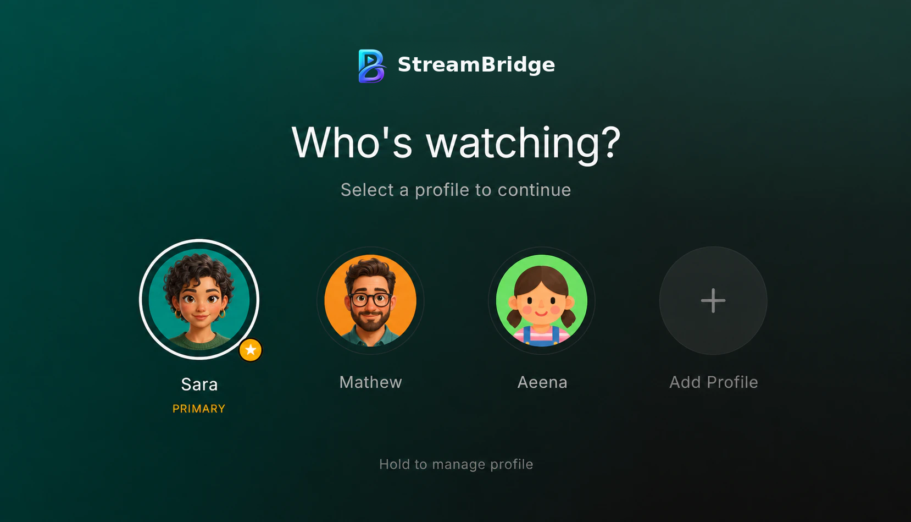
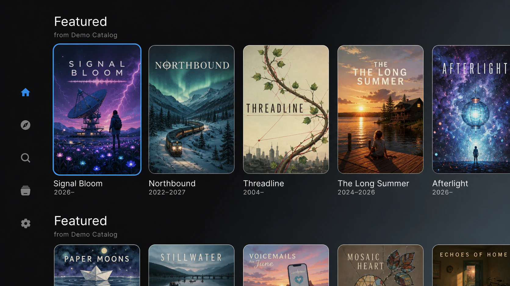
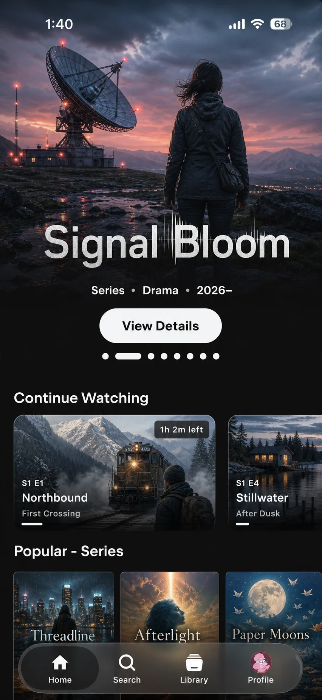
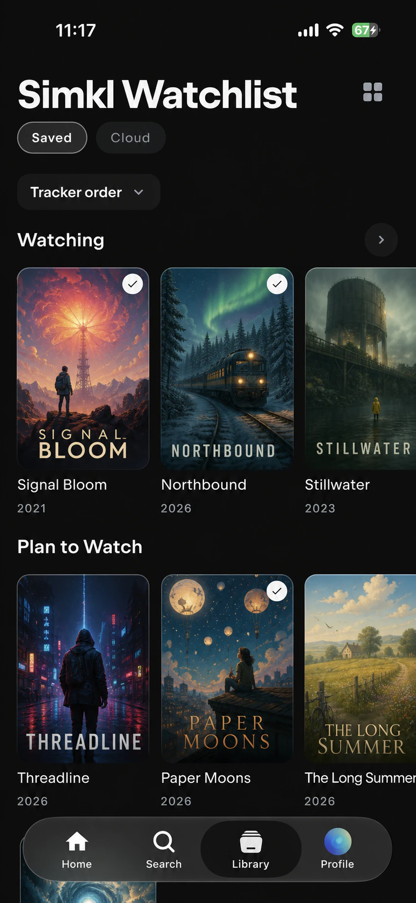

Everyone gets their own StreamBridge
Choose who is watching. Separate profiles keep your library and progress personal.

A free, open-source media client for your phone and tablet. Bring your own sources, and StreamBridge brings your library, subtitles, and watch progress together.
Free and open source under GNU GPLv3. StreamBridge does not host, store or provide media.


Illustrative interface and fictional catalogue.
Choose your platform and find the right download. Available releases are linked below; other platforms are not yet confirmed.
Browse, search and play on Android and iPhone. Bring your own sources and connect the tracking services you use.
Latest release on GitHub
Most newer Android phones use ARM64. The iOS IPA is unsigned; install it with AltStore or SideStore using your Apple ID. Add the sideload source for updates.
Dedicated Android TV and Google TV support has not been confirmed. Compatibility with Google TV has not been verified.
Desktop releases are not currently available for Windows, macOS or Linux.
Samsung Tizen and LG webOS support is not yet confirmed. No Smart TV packages or installation guide are currently available.
StreamBridge does not come with a catalogue. Connect your own sources and bring the details, subtitles and progress together in one place.
Choose who is watching. Separate profiles keep your library and progress personal.

Choose from playback options, with subtitle styling and controls built for your screen.
Make the player yours, from subtitle styling and audio controls to supported skip markers.

Keep track of what matters with your library, lists and optional connected tracking services.
Connect your own addons, media servers and the services you use for tracking, ratings, artwork and skip markers. Availability varies by build and configuration.
Every StreamBridge app is public on GitHub under GNU GPLv3. Read it, build it yourself, or send a patch.
Open on GitHubInstall StreamBridge on the screen in front of you. Sign in once and bring your library and watch progress across your devices.
A few things to know before you get started.
StreamBridge is an open-source media client for browsing and playing content from sources you configure. It does not provide content.
Android APKs and an unsigned iOS IPA are available from the latest GitHub release. Other platform support is not yet confirmed.
Install the unsigned IPA using AltStore or SideStore, which signs it with your own Apple ID. You can add the StreamBridge sideload source for updates.
No. The app ships without content or bundled providers. Connect your own sources and use only media you are authorized to access.
Supported integrations include Trakt, Simkl, MDBList, AniList and WeTrakr. Availability can depend on build credentials and provider configuration.
Need help? Contact StreamBridge or report a technical issue on GitHub.
StreamBridge is a client-side media player. It plays media from sources you connect and is intended for content you own or are otherwise authorized to access. It does not host, store or distribute media and is not affiliated with third-party sources or content providers.
The artwork and interface illustration on this page are fictional. This product uses the TMDB API but is not endorsed or certified by TMDB.